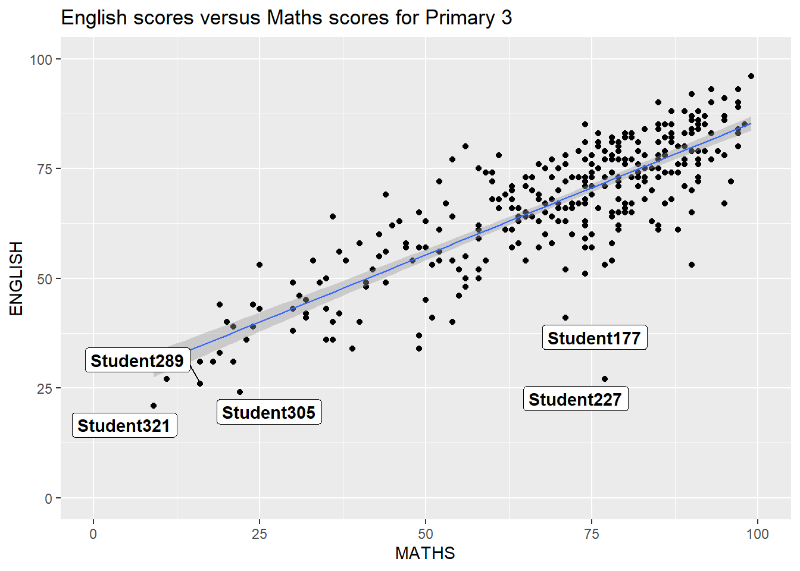
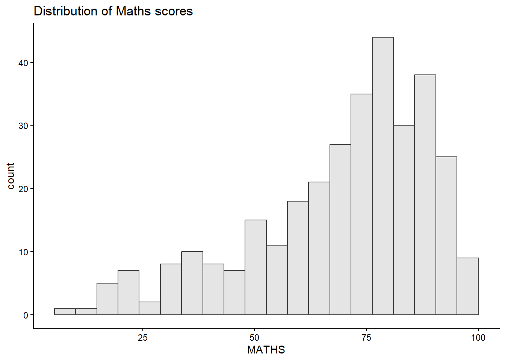
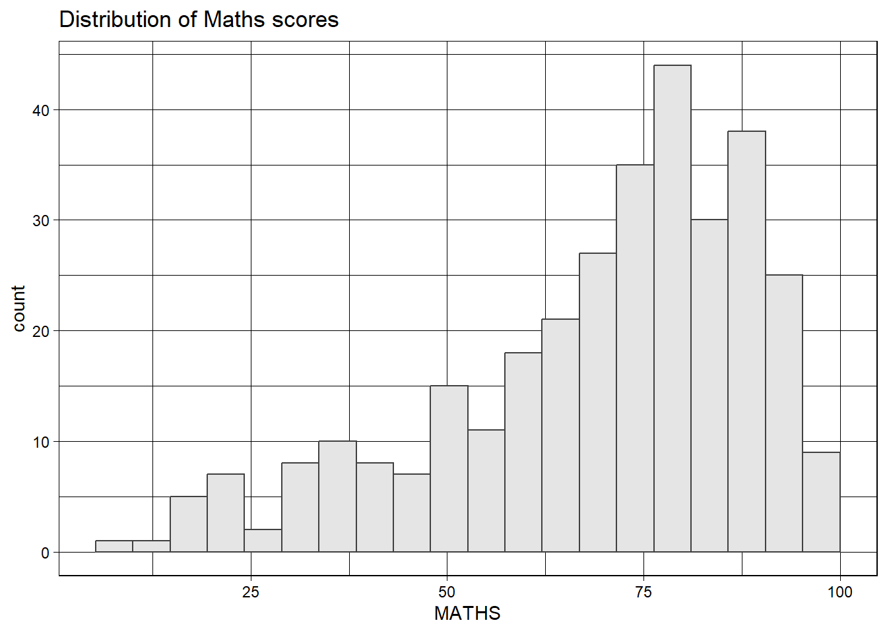
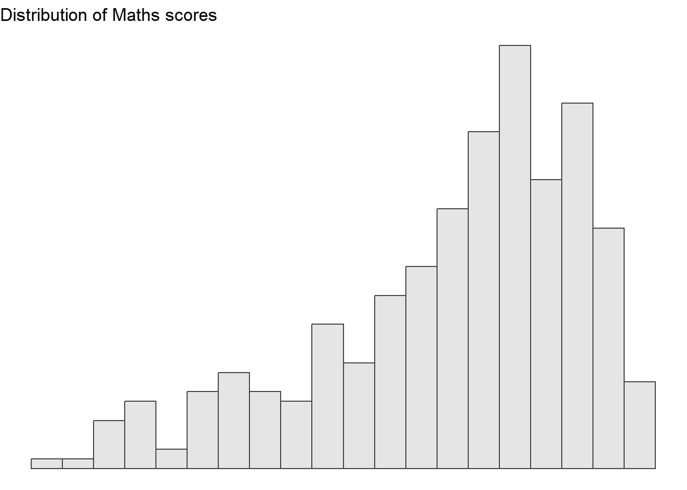
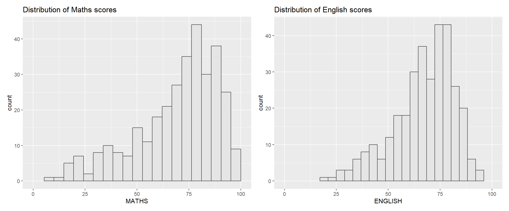
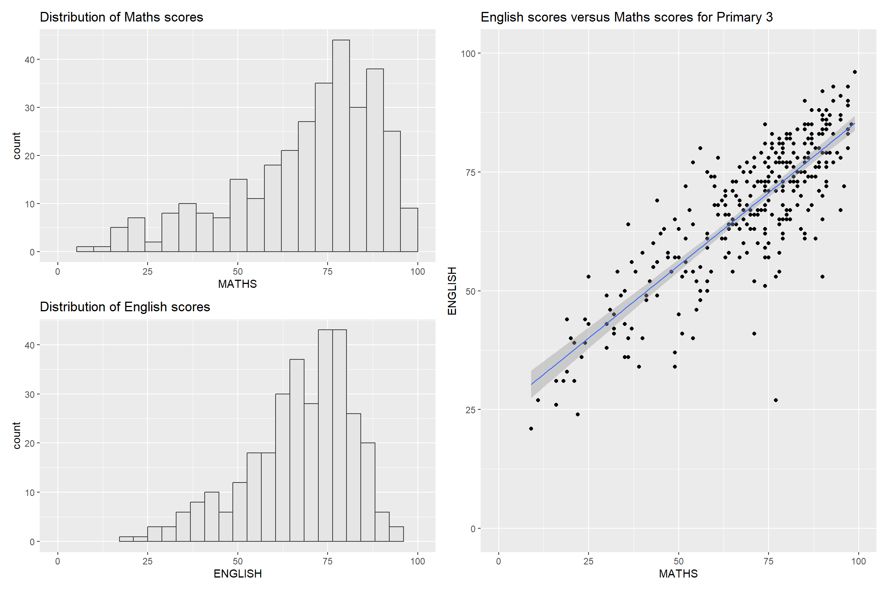
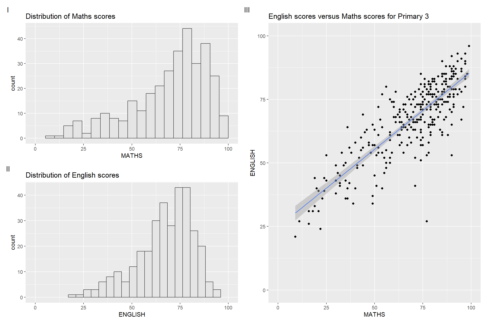
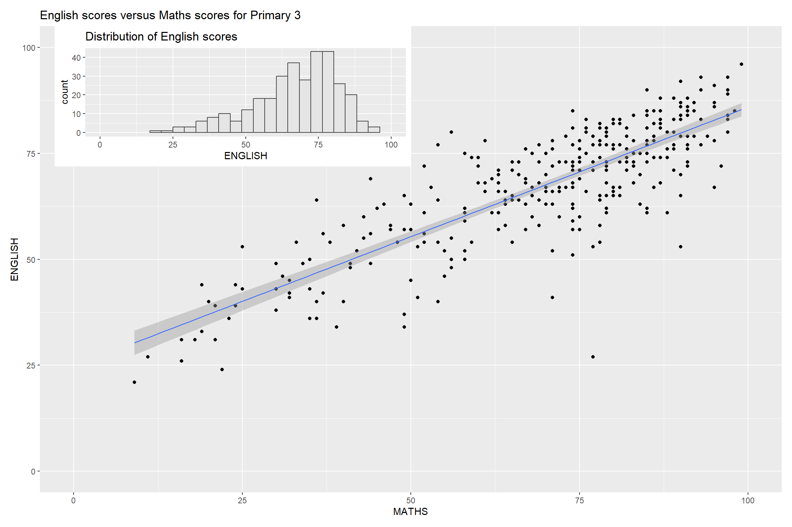
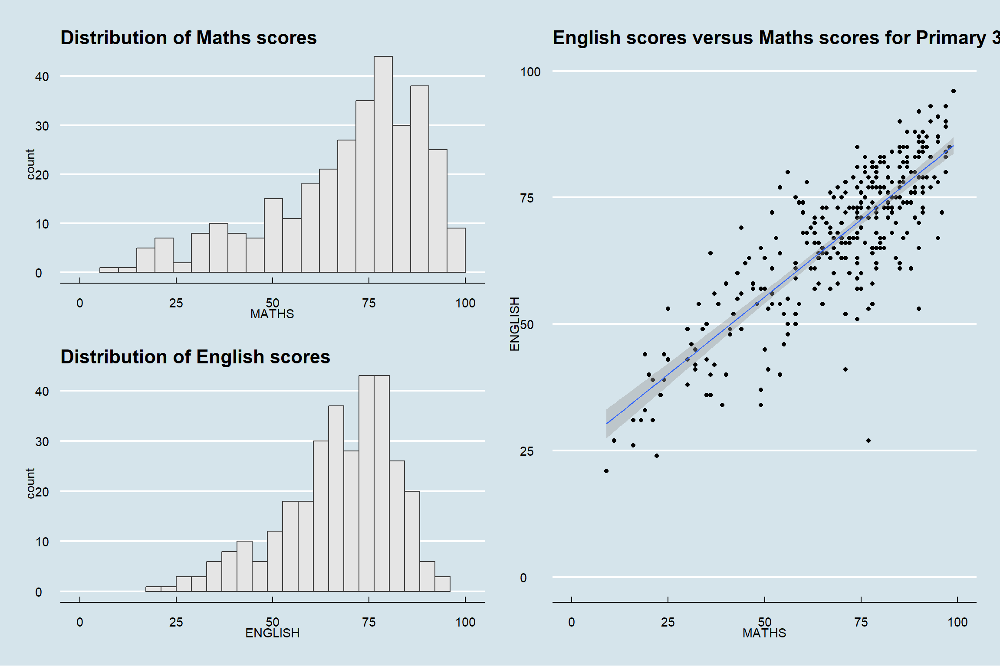

pacman::p_load(ggrepel, patchwork,
ggthemes, hrbrthemes,
tidyverse) Hands-on Exercise 2
Beyond ggplot2 Fundamentals
2.1 Overview
This chapter goes beyond basic ggplot2 and introduces four extension packages that together can transform the exploratory plots into publication ready figures. The three main skills are:
Controlling label placement -
ggrepelsolves the common problem of overlapping text labels by repelling annotations away from each other and their data points using a simple swap fromgeom_text()togeom_text_repel()Professional publication themes -
ggthemesandhrbrthemeselevate plot aesthetics beyond the eight built-in themes, offering publication-style looks (Economist, FiveThirtyEight, WSJ) and typography-focused designs respectively, with fine-grained control over font sizes, grid-lines, and label placement.Combining multiple plots into one figure -
patchworkaddresses figure composition, using operator syntax (+for side-by-side,/for stacked,()for grouping,&to apply themes uniformly) to combine multiple plots into a single coherent figure, complete with auto-tagging for academic referencing and inset capabilities for layered visualisations.
These skills operate at three distinct layers (1) readability (annotations), (2) aesthetics (themes), and (3) composition (layout) and applying them together lets you move a plot from “looks fine in RStudio” to “professional look ready for a report or paper”.
2.2 Getting Started
2.2.1 Installing and Loading the Required Libraries
Four ggplot2 extension packages are used alongside tidyverse:
| Package | What it does |
|---|---|
ggrepel |
Stops text labels from overlapping |
ggthemes |
Themes |
hrbrthemes |
Typography-centric themes |
patchwork |
Combine multiple plots into one figure |
Code chunk below will be used to check if these packages have been installed and also will load them onto your working R environment.
The package ‘hrbrthemes’ is not available for this version of R, therefore hrbrthemes have to be installed from Github using the following:
remotes::install_github("hrbrmstr/hrbrthemes")
2.2.2 Importing Data
The file Exam_data is used for this exercise. The file can be imported using the using read_csv() function of readr package.
exam_data <- read_csv("chap02/data/Exam_data.csv")
Warning
This is a relative path. It only works if your working directory is the parent of chap02/. Otherwise you will get Error: 'chap02/data/Exam_data.csv' does not exist.
You can check your working directory using getwd().
For my case, I will leave it in the parent folder and my file will be imported using the following:
exam_data <- read_csv("data/Exam_data.csv")2.3 Beyond ggplot2 Annotation: ggrepel
The problem: With many data points, text labels overlap into an unreadable blob.
The fix: ggrepel pushes labels apart and draws connector lines back to their points.
Simple swap:
geom_text()→geom_text_repel()
geom_label()→geom_label_repel()

ggplot(data=exam_data,
aes(x= MATHS,
y=ENGLISH)) +
geom_point() +
geom_smooth(method=lm, size=0.5) +
geom_label(aes(label = ID),
hjust = .5,
vjust = -.5) +
coord_cartesian(xlim=c(0,100), ylim=c(0,100)) +
ggtitle("English scores versus Maths scores for Primary 3")2.3.1 Working with ggrepel

ggplot(data=exam_data,
aes(x= MATHS,
y=ENGLISH)) +
geom_point() +
geom_smooth(method=lm,
size=0.5) +
geom_label_repel(aes(label = ID),
fontface = "bold") +
coord_cartesian(xlim=c(0,100),
ylim=c(0,100)) +
ggtitle("English scores versus Maths scores for Primary 3")2.4 Beyond ggplot2 Themes
ggplot2 comes with eight built-in themes, they are: theme_gray(), theme_bw(), theme_classic(), theme_dark(), theme_light(), theme_linedraw(), theme_minimal(), and theme_void(). Below are a few examples of the different themes.
ggplot(data=exam_data,
aes(x = MATHS)) +
geom_histogram(bins=20,
boundary = 100,
color="grey25",
fill="grey90") +
theme_gray() +
ggtitle("Distribution of Maths scores") 



2.4.1 Working with ggtheme Package
Themes mimicking famous publications: Tufte, Economist, FiveThirtyEight, WSJ, Stata, Excel. The example uses theme_economist() having a recognisable light-blue background, serif title. This helps to provide instant professional looks for reports.

ggplot(data=exam_data,
aes(x = MATHS)) +
geom_histogram(bins=20,
boundary = 100,
color="grey25",
fill="grey90") +
ggtitle("Distribution of Maths scores") +
theme_economist()2.4.2 Working with hrbthemes Package
hrbrthemes package provides a base theme that focuses on typographic elements, including where various labels are placed as well as the fonts that are used.

ggplot(data=exam_data,
aes(x = MATHS)) +
geom_histogram(bins=20,
boundary = 100,
color="grey25",
fill="grey90") +
ggtitle("Distribution of Maths scores") +
theme_ipsum()The second goal centers around productivity for a production workflow in terms of font choice, label spacing and readability. Consult this vignette to learn more.

ggplot(data=exam_data,
aes(x = MATHS)) +
geom_histogram(bins=20,
boundary = 100,
color="grey25",
fill="grey90") +
ggtitle("Distribution of Maths scores") +
theme_ipsum(axis_title_size = 18,
base_size = 15,
grid = "Y")
TipWhat can we learn from the code chunk above?
axis_title_sizeargument is used to increase the font size of the axis title to 18base_sizeargument is used to increase the default axis label to 15gridargument is used to remove the x-axis grid lines
2.5 Beyond Single Graph
Multiple plots together often tell a better story than one. This section builds three plots (histograms of MATHS, ENGLISH, then a MATHS-vs-ENGLISH scatterplot) then combines them.

p1 <- ggplot(data = exam_data, aes(x = MATHS)) +
geom_histogram(bins = 20, boundary = 100,
color = "grey25", fill = "grey90") +
coord_cartesian(xlim = c(0, 100)) +
ggtitle("Distribution of Maths scores")
p1
p2 <- ggplot(data = exam_data, aes(x = ENGLISH)) +
geom_histogram(bins = 20, boundary = 100,
color = "grey25", fill = "grey90") +
coord_cartesian(xlim = c(0, 100)) +
ggtitle("Distribution of English scores")
p2
p3 <- ggplot(data = exam_data, aes(x = MATHS, y = ENGLISH)) +
geom_point() +
geom_smooth(method = lm, linewidth = 0.5) +
coord_cartesian(xlim = c(0, 100), ylim = c(0, 100)) +
ggtitle("English scores versus Maths scores for Primary 3")
p32.5.1 Creating Composite Graphics: Patchwork Method
There are different methods to combine plots such as (gridExtra::grid.arrange(), cowplot::plot_grid()), but patchwork has the cleanest syntax and the plots combine like arithmetic:
| Operator | Effect |
|---|---|
+ |
Two columns layout (Side by side) |
/ |
Two rows layout (Stacked rows) |
| |
Side by side (explicit) |
() |
Create subplot group |
2.5.2 Combining Two ggplot2 Graphs
Figure in the tabset below shows a composite of two histograms created using patchwork. Note how simple the syntax used to create the plot!

p1 + p22.5.3 Combining Three ggplot2 Graphs
We can plot more complex composite by using appropriate operators. For example, the composite figure below is plotted by using:
“/” operator to stack two ggplot2 graphs,
“|” operator to place the plots beside each other,
“()” operator the define the sequence of the plotting.
Example: (p1 / p2) | p3 means stack p1 on p2 (left column), put p3 next to them (right column).

(p1 / p2) | p3To learn more about, refer to Plot Assembly.
2.5.4 Combining a Composite Figure with Tag
In order to identify subplots in text, patchwork also provides auto-tagging capabilities.
Basic tag levels
| Value | Output | Example |
|---|---|---|
'A' |
Uppercase Latin letters | A, B, C, D, E… |
'a' |
Lowercase Latin letters | a, b, c, d, e… |
'1' |
Arabic numerals | 1, 2, 3, 4, 5… |
'I' |
Uppercase Roman numerals | I, II, III, IV, V… |
'i' |
Lowercase Roman numerals | i, ii, iii, iv, v… |
The figure below shows the uppercase roman numerals.

((p1 / p2) | p3) +
plot_annotation(tag_levels = 'I')2.5.5 Creating Figure with Insert
Beside providing functions to place plots next to each other based on the provided layout. With inset_element() of patchwork, we can place one or several plots or graphic elements freely on top or below another plot. This can be used as a main plot with a zoomed in inset, or a summary overlaid on detail.

p3 + inset_element(p2,
left = 0.02,
bottom = 0.7,
right = 0.5,
top = 1)
TipCoordinate gotcha
left, bottom, right, top are in relative units (0–1) of the main plot — not pixels, not data coordinates. Easy to accidentally place the inset off-screen. Start with safe values: inset_element(p_inset, left = 0.6, bottom = 0.6, right = 1, top = 1)
2.5.6 Creating a Composite Figure by Using Patchwork and ggtheme
Figure below is created by combining patchwork and theme_economist() of ggthemes package discussed earlier.

patchwork <- (p1 / p2) | p3
patchwork & theme_economist()
TipApplying Theme to Partial Plots.
Critical & vs + distinction:
+adds to the last plot only- & adds to every plot in the composite”
(p1 + p2 + p3) & theme_economist() # ✅ all three themed
(p1 + p2 + p3) + theme_economist() # ❌ only p3 themed
🕹️ LEVEL COMPLETE 🕹️
★ ★ ★ ★ ★
CHAPTER 2 CLEARED!
+1000 XP · ACHIEVEMENT UNLOCKED: ggplot2 Ninja 🥷
Press any key to continue…